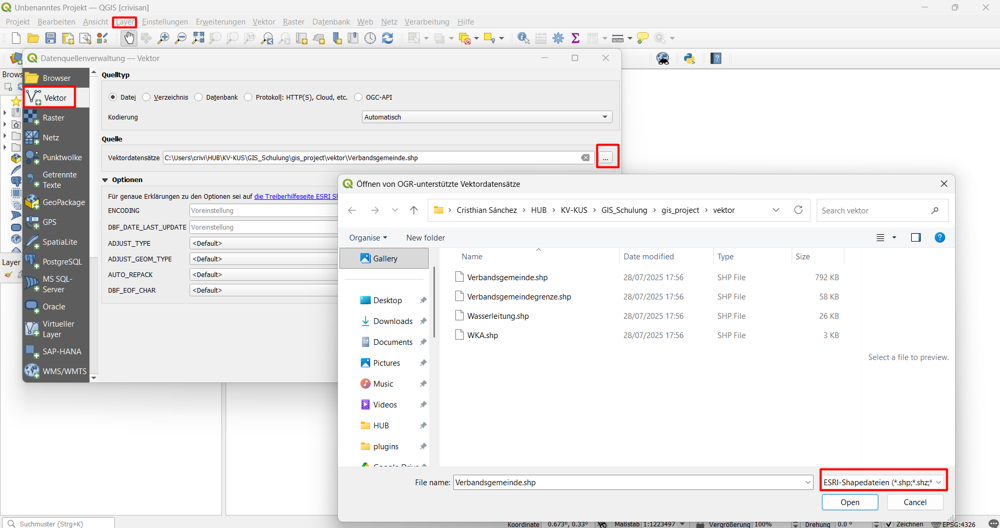
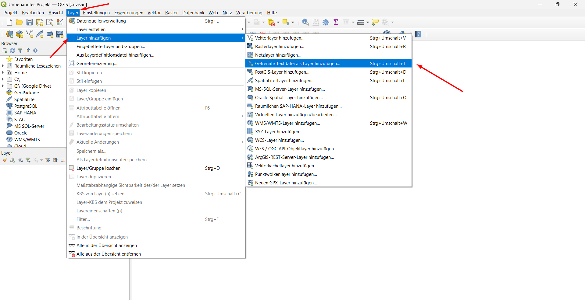
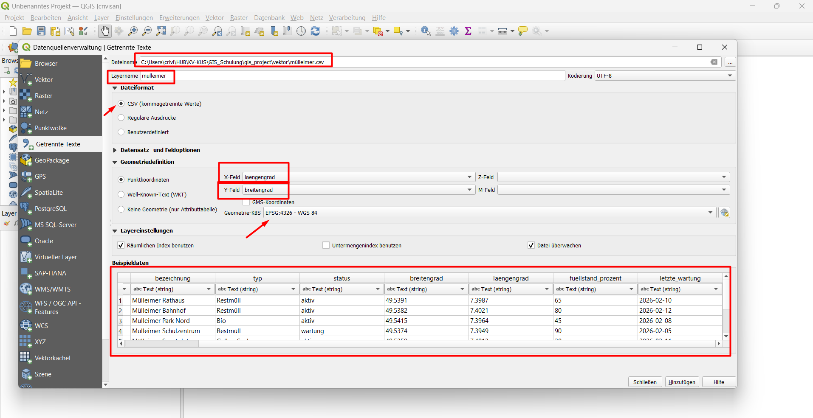
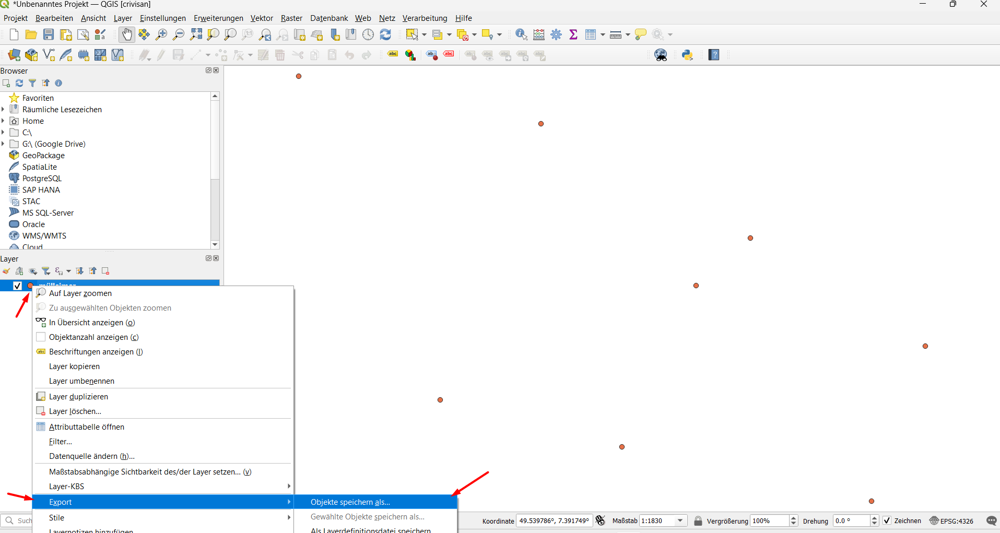
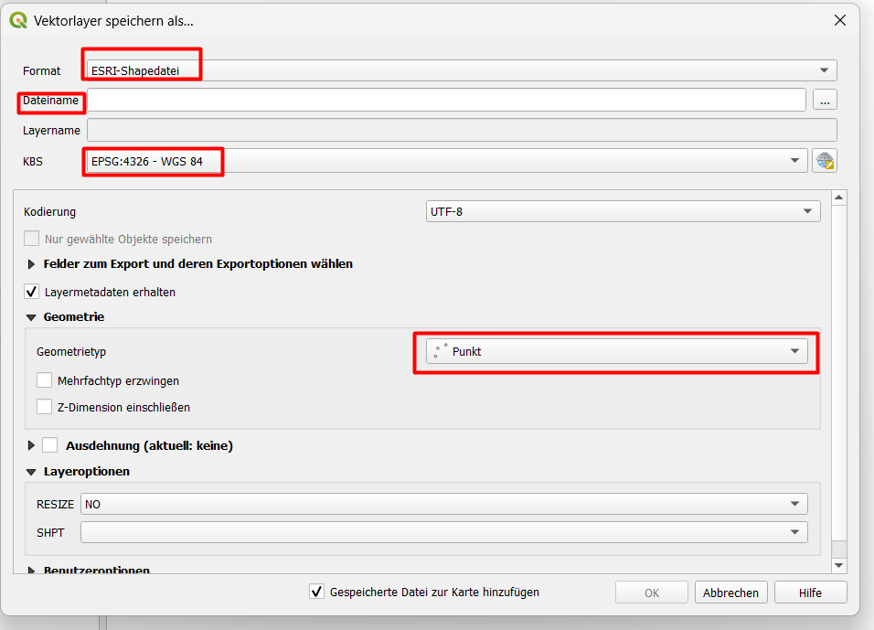
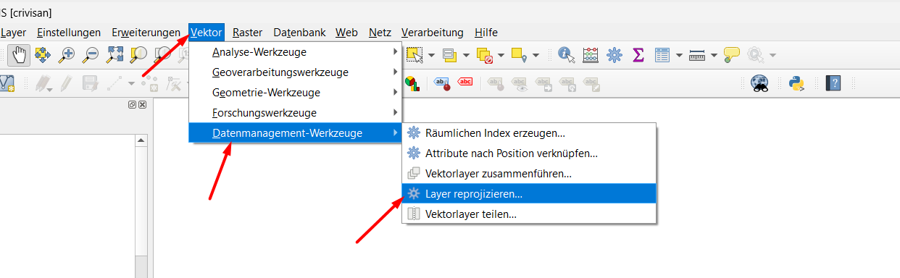
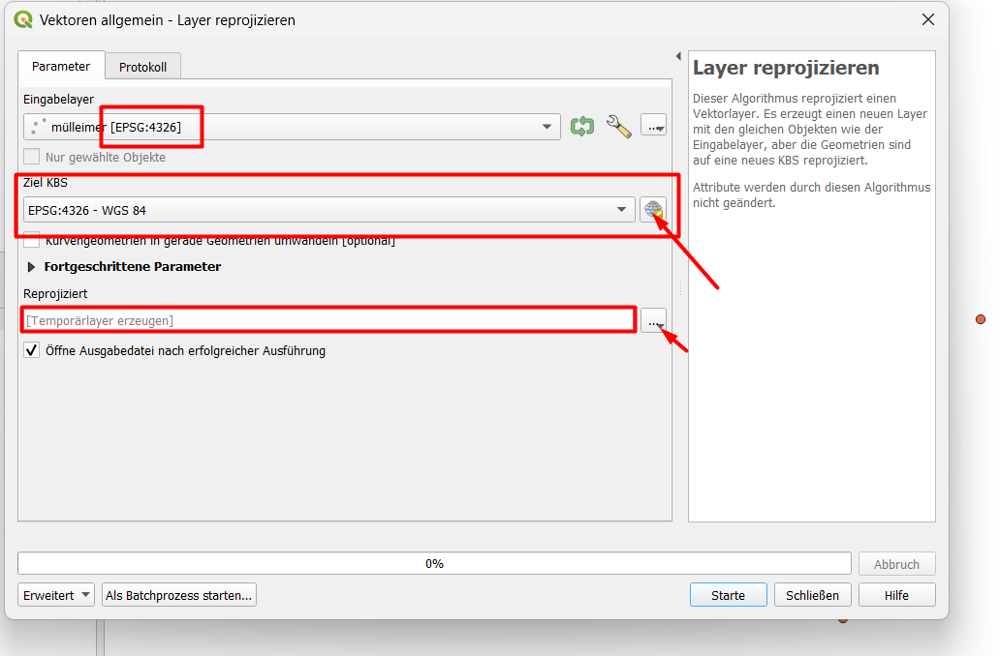

Block 1 – Lokale Daten laden
Theorie: Lokale Geodaten-Formate
Geodaten können auf Ihrem Computer gespeichert sein. Die wichtigsten Formate:
| Format | Typ | Beschreibung |
|---|---|---|
| Shapefile (.shp) | Vektor | Klassisches Format (mehrere Dateien) |
| GeoPackage (.gpkg) | Vektor | Modernes Containerformat (eine Datei) |
| CSV (.csv) | Tabelle | Enthält Koordinaten für Punkte |
| GeoTIFF (.tif) | Raster | Bild mit Georeferenz |
CSV-Dateien enthalten keine Geometrie, aber Koordinaten-Spalten (z.B. lat und lon). Daraus erstellt QGIS Punkte.
1. Shapefile laden
- Layer → Datenquelle verwalten (oder
Strg+L) - Quelltyp:
Vektor - Quelle: Klicken Sie auf
...und wählen Sie Ihre.shp-Datei - Hinzufügen

2. CSV importieren
Verwenden Sie die Übungsdatei muellheimer.csv mit Koordinaten.
Schritte
- Layer → Datenquelle verwalten → Reiter
Getrennte Textdatei - CSV-Datei auswählen
- X-Feld:
lon, Y-Feld:lat - Geometrie-Typ:
Punkt - CRS (Koordinatensystem):
EPSG:4326(WGS84, weil die Koordinaten in Grad vorliegen) - Hinzufügen


Die Punkte erscheinen nun im Kartenfenster.
3. Exportieren in andere Formate
Nachdem die CSV als Layer geladen ist, können Sie sie in andere Vektorformate exportieren.
a) Nach Shapefile exportieren
- Rechtsklick auf den Layer → Export → Objekte speichern unter
- Format:
ESRI Shapefile - Dateiname:
meine_punkte.shp - CRS: Wählen Sie ein projiziertes System, z.B.
EPSG:25832(UTM Zone 32N) - OK


b) Nach GeoPackage exportieren
- Gleicher Weg, aber Format:
GeoPackage - Dateiname:
meine_punkte.gpkg - Layername: z.B.
punkte
4. Transformation von geographischen zu projizierten Koordinaten
Die ursprünglichen Koordinaten waren in Grad (WGS84). Für metrische Analysen in Deutschland benötigen Sie ein projiziertes System wie EPSG:25832.
Methode 1: Export mit Ziel-CRS (wie oben)
Beim Export wird die Geometrie automatisch umgerechnet.
Methode 2: Layer neu projizieren
- Vektor → Datenmanagement-Werkzeuge → Layer neu projizieren
- Eingabelayer: Ihr CSV-Layer
- Ziel-CRS: EPSG:25832
- Ausgabedatei: z.B. punkte_utm.shp


Mini-Übung
- Importieren Sie die
muellheimer.csv. - Exportieren Sie den Layer als GeoPackage mit CRS
EPSG:25832. - Öffnen Sie die Attributtabelle des exportierten Layers – die Koordinaten sind jetzt in Metern (sichtbar in der Spalte, falls vorhanden).
Hinweis: Die Koordinatenwerte in der Attributtabelle bleiben gleich, aber die Geometrie wurde transformiert. Um die neuen Koordinaten zu sehen, können Sie die Spalten
$xund$yim Attributrechner berechnen.